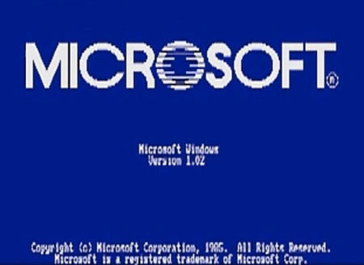
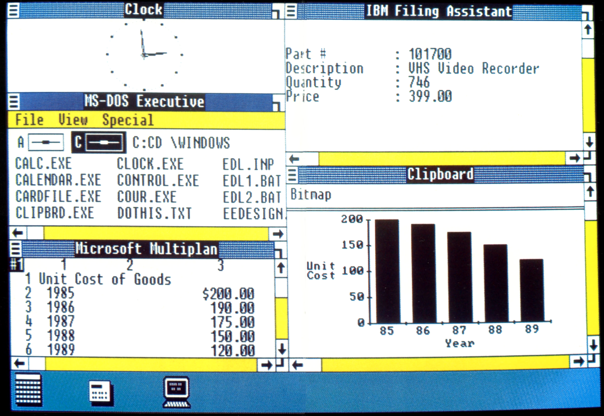

Windows 1.01

Wersja: Windows 1.01
Data premiery: 20 listopada 1985
Architektura: 16-bit
Windows 1.01 to pierwszy system operacyjny Microsoftu z graficznym interfejsem użytkownika. Zawierał m.in. notatnik, kalkulator i... zegar! 😄 Choć toporny, rozpoczął nową erę w historii komputerów osobistych.

Data premiery: 20 listopada 1985
Architektura: 16-bit
Windows 1.01 to pierwszy system operacyjny Microsoftu z graficznym interfejsem użytkownika. Zawierał m.in. notatnik, kalkulator i... zegar! 😄 Choć toporny, rozpoczął nową erę w historii komputerów osobistych.
🔧 Wymagania sprzętowe
- Procesor: 8086/8088
- Pamięć RAM: minimum 256 KB
- Dyskietka: 5.25" (360 KB)
- System operacyjny: MS-DOS 2.0 lub wyższy
💽 Instrukcja instalacji
- Pobierz obraz dyskietki w formacie IMA klikając poniżej.
- Utwórz wirtualną maszynę z MS-DOS (np. PCem, 86Box lub DOSBox-X).
- Załaduj plik IMA jako stację dyskietek i uruchom z niej maszynę.
- Postępuj zgodnie z prostymi instrukcjami instalatora.